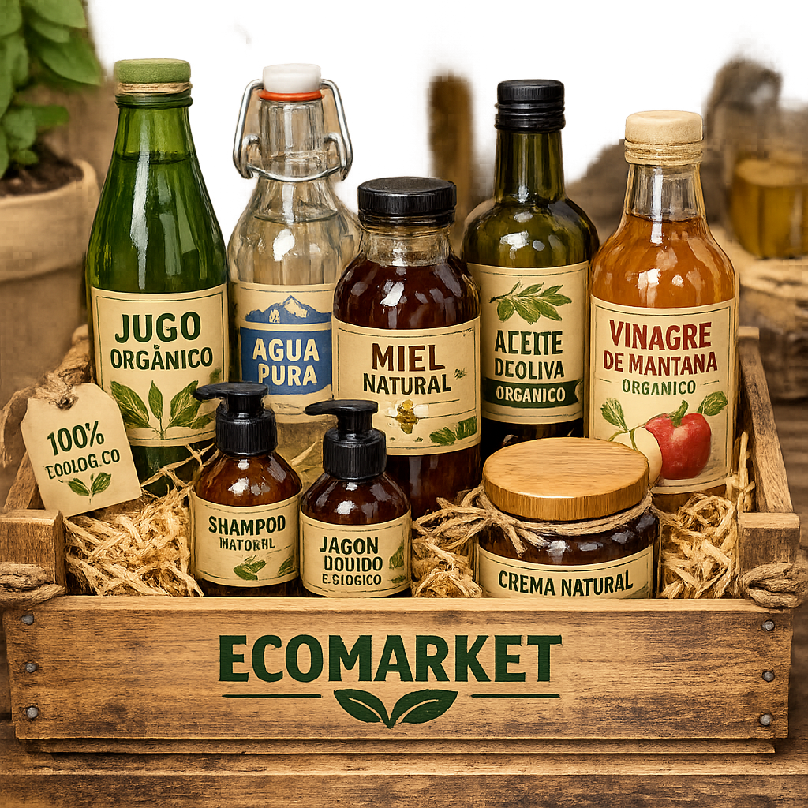

La guía definitiva para reducir los residuos domésticos en 2026
Comienza tu camino hacia un estilo de vida consciente con estos consejos prácticos. Desde los conceptos básicos del compostaje hasta compras libres de plástico, descubre cómo los pequeños cambios logran un gran impacto...
Leer más →